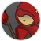
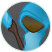
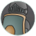

Small Board Tutorial
This is a basic tutorial for the game, I barely could make the game work properly, so forgive me for the poor learning curve.
General rules & Goals
You control two pawns - heroes working for good of the kingdom - and your mission is to find the king's crown and take it back to the castle.
| → → |
Each pawn have two actions, which can be:
| wait just pass the turn. |
| move walks a single tile depending on the tile type (see below). |
| attack attack one tile. It ends the pawn's turn immediately. |
| pick object pick the crown if you are at the same tile. |
The tiles may have a special cost to walk on it, or even be unwalkable at all. The table below show the costs to walk on a tile:
 1 action - dwarves require 2 actions.
1 action - dwarves require 2 actions.
|
| 2 actions - elves require only 1 action. |
| Unwalkable - dwarves may walk for 2 actions. |
| Unwalkable. |
After your pawn, the game will take its turn, performing the following actions (in order):
- spawn: spawn one random unit or pack of enemies at spawn points .
- move: move all enemies, except the ones that have just spawned, to the nearest hero to them. The enemies may walk on moutains to reach dwarves, but they will prefer to walk around them.
- attack: all enemies within the same tile of a pawn will attack, except the ones that just spawned or moved.
Characters
|

Bin'golin the elf mage Attack: 10 Defense: 5 Range: 2 Spend 1 action to walk on forests. |

Pana Cota the human mage Attack: 25 Defense: 0 Range: 1 |
Kin'olin the elf ranger Attack: 15 Defense: 5 Range: 1 Spend 1 action to walk on forests. |

Greta Marieta the human warrior Attack: 2 Defense: 15 Range: 0 |
Myxzpylk the dwarf warrior Attack: 10 Defense: 10 Range: 0 Can walk on mountains for 2 actions. Spend 2 actions to walk on plains. |
Enemies
|
Goblin Attack: (same as the amount of goblins) Defense: 0 |
Troll Attack: 10 Defense: 6 |
Dragon Attack: 20 Defense: 20 |